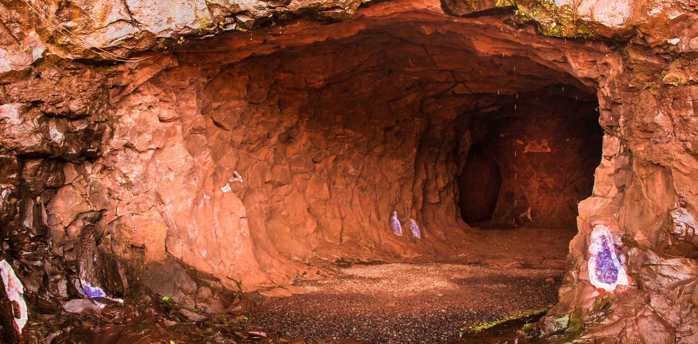

Siempre que el caudal de agua lo permita, la visita al Parque incluye los paseos Inferior y Superior, los senderos Verde y Macuco, el Tren Ecológico y el Centro de Visitantes, entre las distintas excursiones. Imperdibles: los paseos a la luz de la luna llena. Pero además de las Cataratas, en los alrededores del Parque Nacional y en Puerto Iguazú hay muchos lugares que vale la pena visitar. A continuación, varias propuestas para tener en cuenta durante el viaje.
Jungle Fly Iguazú
Los amantes de las actividades extremas encontrarán en Jungle Fly una experiencia que
combina diversión, aventura y respeto por la naturaleza.
En un entorno 100 % natural, el lugar
les ofrece a los turistas altas dosis de adrenalina en canopy, rappely puentes colgantes en medio de la
selva paranaense.
Con traslados ida y vuelta a los hoteles, la jornada comienza con un trekking
interpretativo
de la fauna y la flora autóctonas. Al llegar a la primera plataforma se realiza el equipamiento de las
actividades y la primera tirolesa, de 300 metros de largo por 70 metrosde alto sobre las copas de los
árboles.
Luego de la segunda plataforma se sigue por un camino que baja al barranco del Paraná, y en
la tercera
plataforma se hacen arborismo y tirolesa, con dos puentes colgantes de 100 metros de largo cada uno.
Entonces el grupo sube una escalera para realizar rappel irregular, en un descenso de cascadas
de 12
metros.
Finalmente, hacen un trekking de 1500 metros.
No pueden hacer esta actividad los menores de 7
años y los mayores de 65 años.
Hito de las Tres Fronteras

Son tres países en un solo lugar.
En Puerto Iguazú, el Hito de las Tres Fronteras se
encuentra emplazado en la confluencia de los ríos Iguazú y Paraná, desde donde se observan las costas y
los paisajes de Argentina, Paraguay y Brasil.
Cerca del monumento, funciona una Feria de Artesanos donde se pueden comprar productos típicos
de Misiones. A su vez, se logra observar el puente Tancredo Neves, que conecta las ciudades argentinas
de Puerto Iguazú y su vecina brasileña de Foz do Iguazú.
Por las noches se puede disfrutar de las
aguas danzantes y de un “mapping” de 20 minutos que proyecta una
secuencia de bailes tradicionales de los tres países.
Refugio Güirá Oga
En guaraní, Güirá Oga significa “la casa de los Pájaros” y consiste en una estructura
ubicada
en la entrada
de Puerto Iguazú, que colabora con el rescate y la reintroducción de diferentes animales.
Durante
el
recorrido se pueden ver monos, coatíes, loros y guacamayos, entre otras especies.
Además, es
posible participar de capacitaciones de concientización.
En el refugio, el objetivo es "liberar a los animales que tengan posibilidades de sobrevivir en la
naturaleza y recuperar a los que no cuentan con esa posibilidad para la reintroducción de sus crías".
Los ejemplares que son rescatados en la selva “provienen del tráfico de fauna, o son
atropellados en las
rutas, heridos por cazadores furtivos o entregados voluntariamente por la población", se destaca en el
predio.
Selva Yryapú
Cerca de Puerto Iguazú, Selva Yryapú se extiende por 600 hectáreas, donde se observan
árboles de más de 400 años de antigüedad.
La cultura guaraní convive con la industria turística, ya que allí se levantan unos 15 hoteles
de distinta
categoría, además de espacios artísticos, deportivos y sociales.
Aldea Fortín Mbororé
La comunidad guaraní Fortín Mbororé es una de las 15 que en los últimos años decidieron
abrirse
al turismo
comunitario.
A unos 15 minutos de Puerto Iguazú, la etnia Mbya cuenta con unos 1200 habitantes, que
viven
dentro de la
selva y ofrecen a los visitantes un recorrido por senderos interpretativos.
Forman parte de la experiencia la degustación de comidas típicas (mbeyu, la chipa,
remolacha
dulce y miel),
la explicación sobre las trampas que usan para cazar animales y una demostración de sus danzas.
Minas de Wanda
A 40 kilómetros de Puerto Iguazú, Minas de Wanda es una visita guiada imperdible por los túneles y el taller donde se trabajan las gemas. En la entrada ya se pueden ver amatistas violetas incrustadas en las paredes de Colonia Wanda, que fue fundada en 1936 por un grupo de pioneros, en su gran mayoría polacos. En las Minas de Wanda se ofrecen visitas guiadas a los viajeros, que duran alrededor de 45 minutos, en las que se explica cómo es la explotación a cielo abierto.
